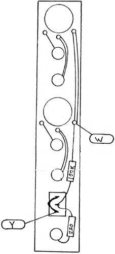

|
Control Module Wiring Diagram
 The connections to the W pad can be made to any nearby circuit board. This is a ground connection. The Y pad connection should be made to any nearby Y pad on adjacent modules. If no Y pad exists on any module in the panel, then the green power supply wire will go directly to this point on the switch. Resistor color code:
User test: Plug an input into each of the inputs and check to make sure that the pot controls the level. Plug the pulse output (red jack) into a DSG, DTG, or a suitable module which handles pulse inputs. The switch will activate these functions when in either the up or down position. If this output is applied to the black input jack of a DSG, then sustain information will be included in the pulse and the output will be an envelope with an attack time and a release time set by the module pots or voltage control, and the sustain time will be determined by the time the switch is held in the momentary position, or the time it is left in the switched "on" position.
|